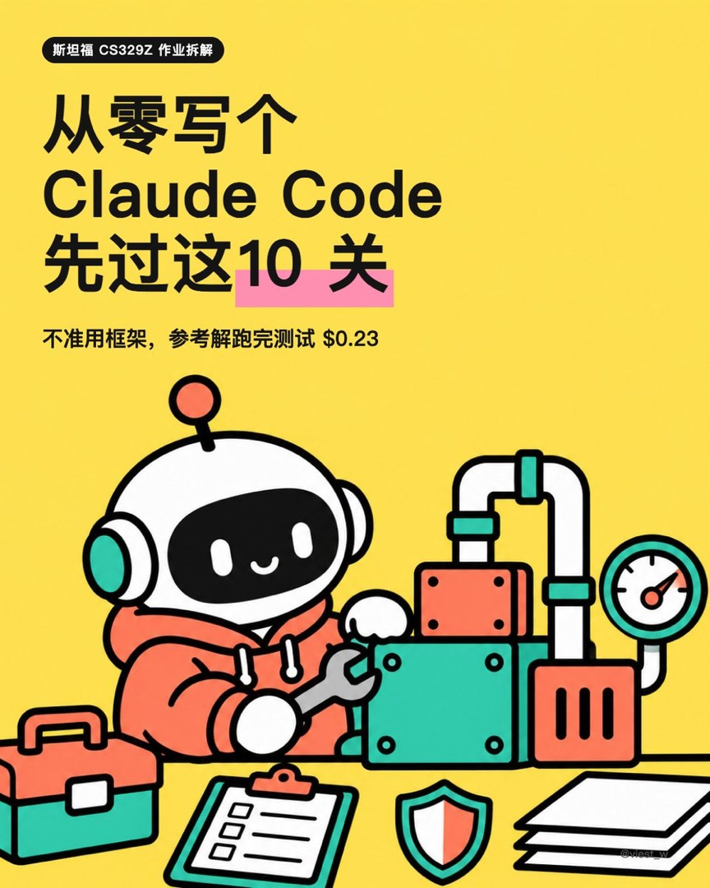
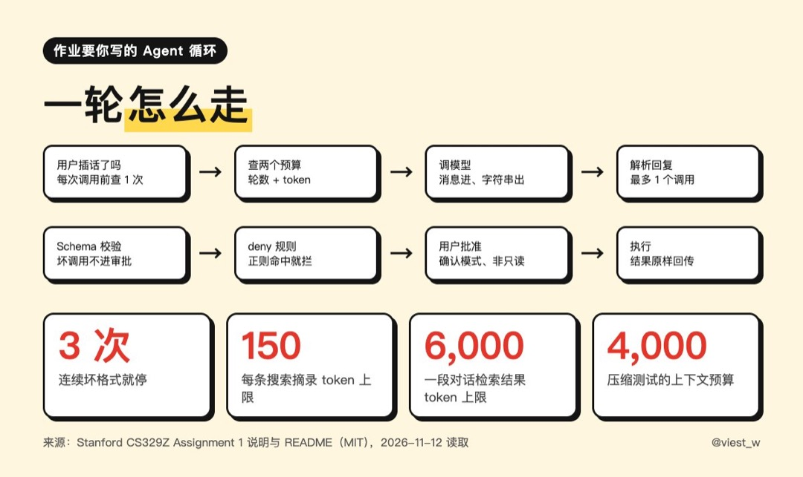
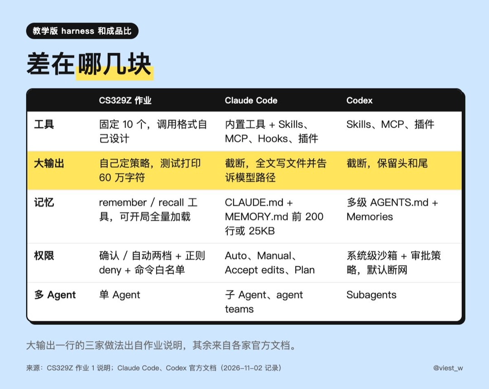
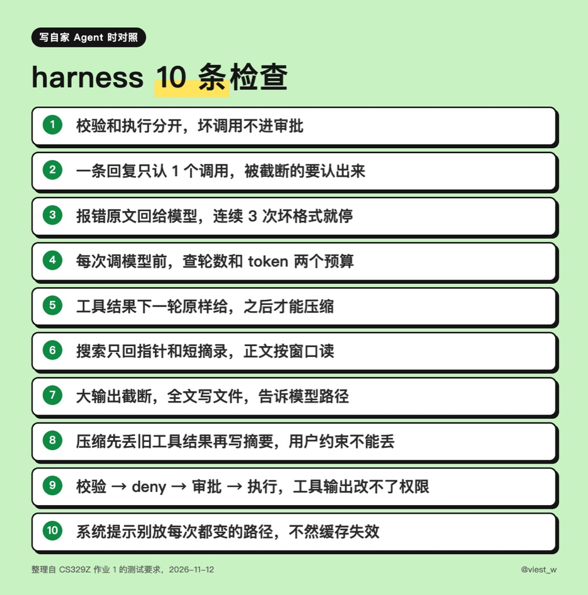

本期速览
01 Aikido并行攻击验证真实漏洞
02 LangChain动态路由降本74%
05 Coze企业版分阶段下线
06 斯坦福课程从零实现Harness
01｜Aikido并行攻击验证真实漏洞
来源（X） · @AikidoSecurity · 2026-10-16 23:24
中文译文
数百个 AI agent 并行攻击你的应用。
它们随后会重新利用每一个发现，以证明其是真实存在的。
任何它们无法证明的问题，都不会出现在你的报告中。
原文
Hundreds of AI agents attack your app in parallel. They then re-exploit every finding to prove it's real. Anything they can't prove never reaches your report.
02｜LangChain动态路由降本74%
来源（X） · @Xudong07452910 · 2026-11-12 08:23
LangChain 几个月前的一篇实验文章还是有参考价值，值得一看。
他们用 NVIDIA 开源的 Switchyard，在 145 个多步 Agent 任务上测试动态模型路由。
思路是先让便宜的 30B 模型执行任务，每轮由一个 Judge 判断有没有跑偏，连续两次判断不佳，就将后续执行升级到 Claude Opus。
结果 93% 的模型调用都由小模型完成，总成本降低了 74%，但准确率也从 86% 降到了 80%。
还有个容易忽略的细节，单独使用小模型就能达到 77.7%，路由带来的提升甚至没超过实验波动，而 Judge 自己也消耗了 21% 的路由预算。
感觉它的评测思路蛮值得借鉴的。
当我们设计 Agent 的模型路由，应该先在真实任务上对比强模型、小模型和动态路由，算清准确率、延迟和成本，再决定是否值得增加这一层 Harness。
原文：https://www.langchain.com/blog/switchyard-agent-routing-benchmark
03｜Eleven上线WebSocket对话
来源（X） · @ElevenLabsDevs · 2026-08-26 05:31
中文译文
Eleven v3 Conversational 一直在为 ElevenAgents 中的 Expressive Mode 提供支持。
现在它已可通过新的 Text to Dialogue WebSockets 使用，其中包括支持多上下文连接，可同时运行多个对话。
原文
Eleven v3 Conversational has been powering Expressive Mode in ElevenAgents. Now it's available through new Text to Dialogue WebSockets, including a multi-context connection for running many conversations at once.
04｜Hyperresearch自动研究报告
来源（X） · @Doge9880 · 2026-11-11 23:00
丢进去一个问题，它就能自动拆解任务、并行搜索、交叉验证，最后生成一份带引用来源的研究报告。
最有意思的是内置 4 个 Critic 多轮审查机制，专门挑报告中的问题，而且只允许局部修改，避免整篇推倒重来。
研究资料还能沉淀到可搜索知识库，支持 Light、Full、Dissertation 三种模式，日常调研、深度研究、论文写作都能覆盖。
经常用 Claude Code 做资料搜集的，值得收藏！
🔗 https://github.com/jordan-gibbs/hyperresearch
05｜Coze企业版分阶段下线
来源（X） · @UPing123zzz · 2026-11-11 10:07
2025 年 7 月，字节跳动高调开源 Coze Studio 和 Coze Loop。那时候是什么场面？低代码开发、Agent、RAG、工作流、企业知识库，几乎什么都能往里面塞。各路博主疯狂推荐，培训机构拿它卖课，开发者拿它做项目，企业开始围绕它搭建自己的业务系统。所有人都在讨论怎么用扣子构建 AI Agent，怎么通过扣子降低开发门槛，怎么让不懂代码的人也能参与 AI 时代。
结果呢？2026 年 10 月 29 日，扣子官方宣布企业版分阶段下线。11 月 30 日停止接受企业版新客户购买，旧版部分套餐 12 月 31 日下线，新版企业套餐最晚到 2027 年底退出。
先说清楚，不是整个扣子平台都关了，开源仓库也还在。但问题恰恰在这里：代码还在，曾经围绕它建立起来的商业产品体系却开始退场了。
最讽刺的是什么？一个当初想让无数开发者围绕自己建立生态的平台，最后连企业用户的工作流、文件、记忆、项目到底怎么完整导出和迁移，都要等后续公告。
这他妈才是最值得关注的地方。
为什么扣子会走到今天？
第一，字节自己的战略变了。扣子团队已经被报道并入豆包体系。站在字节的角度，豆包拥有更大的用户入口，AI 编程、办公 Agent、工作流能力完全可以向统一的产品体系整合。以前需要一个独立的扣子去吸引开发者，现在公司可能更想把资源集中到更大的 AI 入口上。商业上可以理解，但这不代表用户过去的投入就不存在了。
第二，AI 开发方式也在变化。2024 年做一个 Agent，很多人还在画布上拖节点、连插件、配置知识库。到了 2026 年，Codex、Claude Code 这些 AI Coding 工具已经让很多复杂工作流可以直接通过自然语言生成代码，再进行测试、部署和维护。低代码不是没用了，而是它不再是很多开发者构建 AI 应用的唯一入口。原来靠降低开发门槛建立起来的优势，正在被新一代 AI 编程工具重新定义。
第三，也是最现实的一点：用户多不等于生意好，生态热闹不代表商业模式就一定跑得通。
一个平台可能有几百万用户，天天有人发教程、分享案例、制作 Demo，但真正愿意持续付费的企业有多少？运行大模型的成本、服务器成本、企业支持成本又有多少？扣子的具体经营数据外界不知道，不能直接说它亏损。但一个平台再火，如果它在集团内部的商业价值和战略价值不够高，照样可能被整合。
真正让我觉得可怕的，不是扣子调整业务，而是这种事情对整个社会的影响被严重低估了。
一个大学生花几个月学习扣子，跟着教程搭建工作流，以为掌握了一门能够就业的技术；一个普通人花几千块报班，学怎么做 Agent、怎么接知识库、怎么自动化办公；一个小团队花半年时间把客户服务、内容生成、内部知识库全部搬到平台上，甚至已经开始对外收费交付。
最后，平台一句产品整合、套餐升级，原来的技术路线和业务规划就可能需要重新评估。
大厂改变战略可能只需要一次内部会议，开发者改变技术路线可能要花几个月，企业迁移一套正在运行的系统可能还要承担额外成本、故障风险和客户压力。
这笔账到底谁来算？
更大的问题是信任。
如果开发者今天围绕一个平台投入大量精力，明天就可能因为商业战略调整而被迫迁移，那以后谁还敢毫无保留地把核心业务押在单一平台上？如果企业发现所谓的 AI 基础设施连长期产品路线都没有确定性，那它们又怎么敢把关键生产系统迁进去？
当这种不确定性越来越普遍，整个 AI 产业的试错成本就会越来越高。中小企业不敢轻易采购，开发者更倾向于短期套利而不是长期建设，培训市场又不断制造新的工具焦虑。今天教扣子，明天教另一个平台，后天再告诉你前面的都过时了。
最终可能出现一种极其荒诞的现象：AI 工具越来越强，围绕 AI 工具产生的无效学习和重复建设却越来越多。
当然，开源项目不会因为商业版调整就自动失效。真正有价值的代码依然可以被开发者部署、修改和维护。但开源不意味着商业服务永远存在，更不意味着大厂会永远替你承担维护成本。
所以这件事给整个行业留下的教训，绝对不只是不要使用扣子。而是不要把使用某个工具的熟练程度，误认为自己拥有了不可替代的技术能力。
真正值得学习的是业务分析、系统架构、RAG、API、Agent 编排、代码开发、部署、评测、故障恢复这些能够跨平台迁移的东西。真正值得企业保留的是自己的数据、代码、业务逻辑和系统控制权，而不是把所有东西交给一家 SaaS 厂商。
一个优秀的 FDE，不应该因为扣子没了就不会开发 Agent；一个真正掌握 AI 工程能力的团队，也不应该因为某个供应商调整产品，就连自己的业务系统都无法独立维护。
过去两年，整个 AI 行业都在疯狂教普通人怎么使用工具，却很少有人认真告诉他们：工具本身可能是这个时代最不稳定的东西。
今天是扣子企业版调整，明天也可能是另一家你天天使用的 AI 平台。
技术迭代当然值得欢迎，大厂调整战略也无可厚非。但开发者不是用完就扔的流量，企业也不是随时可以重新迁移业务的试验品。
一个产业真正成熟的标志，不是每天又发布多少个牛逼的 AI 产品，而是当某个产品决定退出时，那些曾经相信它、依赖它的人，依然能够体面地带走自己的数据、代码和业务。
否则，所谓的 AI 生态繁荣，最后可能只是无数普通开发者和中小企业一次又一次替大厂的战略试错买单。
大厂可以不断换方向，但普通人的时间、企业的成本和整个开发者生态的信任，不应该被当成可以无限消耗的资源。
06｜斯坦福课程从零实现Harness
来源（X） · @viest_w · 2026-11-12 07:15
【它只给你一个接口】
课程提供的模型封装只做一件事：一组消息进去，一个字符串出来。没有 tool calling，没有结构化输出，不准用 Agent 或 LLM 框架，也不准加依赖。模型怎么知道有哪些工具、调用写成什么格式、怎么从回复里解析出来，都得自己写。满分 118：48 分是不调模型的确定性测试，40 分是在线测试，30 分是两份书面报告。参考解把在线测试跑一遍花 0.05 美元，模拟用户评测再加 0.18 美元。
【一轮循环怎么走】
每次调模型前，先看用户中途有没有插话，再查轮数和 token 两个预算。回复里最多认一个工具调用，先按 JSON Schema 校验，再过 deny 规则，确认模式下非只读工具要用户点头，最后才执行，结果原样放进下一次调用。连续 3 次写出坏格式就停，坏格式包括解析失败、工具名不存在、参数不对、回复被 max_tokens 截断。
【几条很像真产品的要求】
截断：一条调用从任意位置被截断，解析器只能给出「没有调用」或完整的原调用，截在参数中间必须报错；参数里就算夹着一段完整的调用文本，也不能被误认成第二个调用。
检索：每条搜索摘录不超过 150 token，读文档一次最多 1,500 token，一段对话里两类检索结果合计不超过 6,000 token。20 道题里有 5 道问的是后来被公告改掉的政策。
大输出：一条命令打印 60 万字符之后，每次调用仍要守住上下文预算。说明里点名了几家的做法：mini-swe-agent 原样全给，Codex CLI 截断时留头尾，OpenHands、Gemini CLI 和 Claude Code 截断后把全文写进文件，告诉模型路径。
压缩：测试预算只有 4,000 token，参考解的系统提示约 1,000 token。用户第一条消息里给的两个约束，11 轮之后还要答得出来。
注入：文档和邮件里埋了写给 AI 的指令，有的让它跑命令，有的让它切到自动模式。埋的命令故意绕开测试里的 deny 规则，挡住它只能靠系统提示和你在终端工具外加的检查。工具输出也不准改模式和权限。
【和 Claude Code、Codex 比】
这是教学版的单 Agent，作业范围里没有子 Agent、MCP、Skills、Hooks。权限只有确认和自动两档，加正则 deny 规则和命令白名单沙箱；Claude Code 有 Auto、Manual、Accept edits、Plan 四种模式，Codex 默认断网，用系统级沙箱加审批策略。记忆上，作业允许开局把整个记忆库塞进提示，但 recall 工具必须能用；Claude Code 每次加载 MEMORY.md 的前 200 行或 25KB，Codex 是多级 AGENTS.md 加 Memories。
最后的评测是 20 个模拟用户的多轮对话。裁判只看得到每个工具结果的前 300 字符和含数字、人名的片段，说出工具结果里没有的事实就判失败。
想动手的话，按测试顺序一题一题过就行，前面不用花钱：确定性测试用的是回放固定回复的假模型。最后一张卡是我从测试要求里整理的 10 条检查，写自家 Agent 时也能对照。作业是 MIT 协议，原文放在回复里。#AIAgent #ClaudeCode



